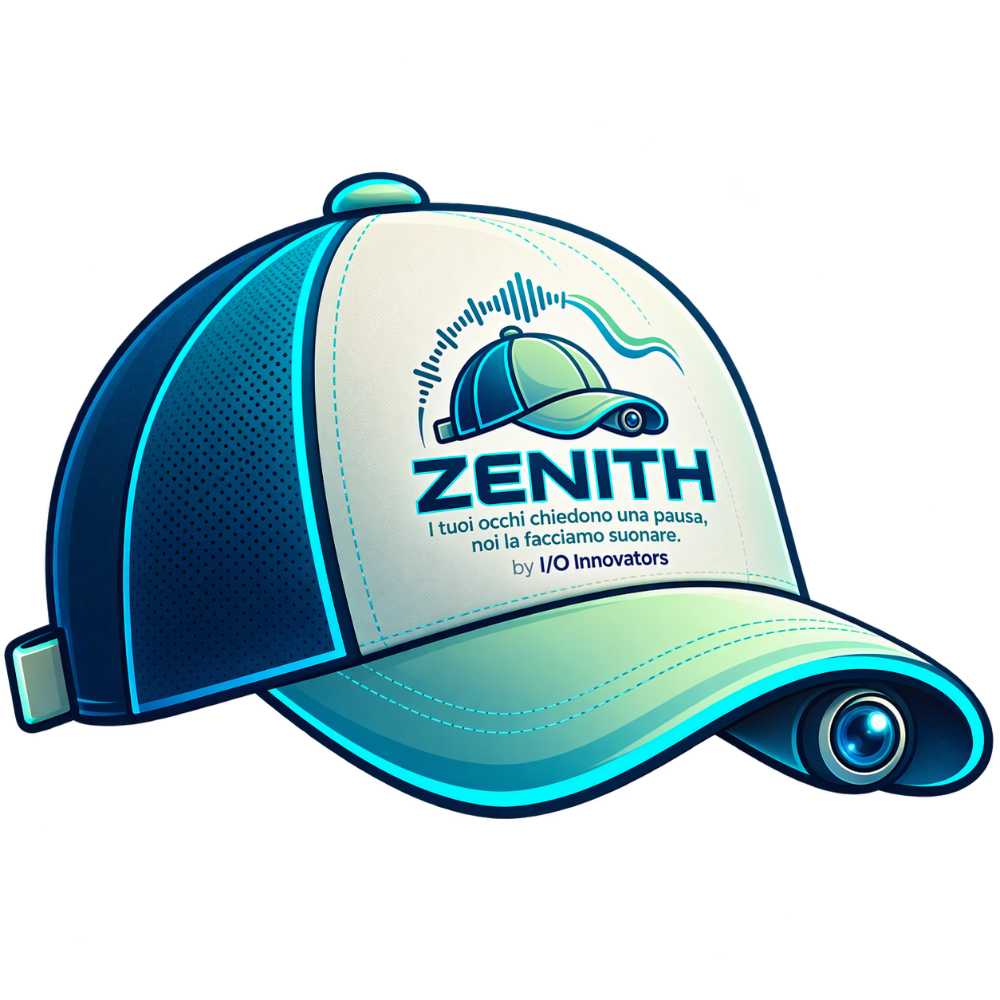

Zenith è il primo cappello smart indossabile che monitora l'affaticamento visivo e la tensione facciale durante lo studio o il lavoro al computer, intervenendo con un segnale acustico calibrato prima che lo stress si trasformi in mal di testa.

Posizionata discretamente sotto il bordo della visiera, inquadra la zona perioculare e la fronte per analizzare la frequenza di ammiccamento e le micro-contrazioni muscolari legate allo sforzo visivo.
Alloggiati in una tasca interna traspirante e isolata, elaborano in tempo reale i dati raccolti dalla videocamera senza appesantire il cappello.
Posizionato strategicamente sul lato per emettere una frequenza sonora dolce, non invasiva ma chiara, che segnala il momento esatto in cui staccare gli occhi dai libri o dallo schermo.
La micro-videocamera osserva costantemente i segnali involontari di stanchezza del viso: riduzione del battito delle palpebre, aggrottamento delle sopracciglia e tensione della fronte tipici di chi studia per ore senza fermarsi.
L'algoritmo programmato su Arduino analizza l'andamento dello stress nel tempo. Non scatta per un singolo movimento, ma riconosce quando il livello di tensione supera la soglia critica per diversi minuti consecutivi.
Appena viene rilevato il rischio di sovraccarico, Arduino attiva il buzzer integrato e suggerisce una pausa rigenerante per occhi e mente.
Abbiamo messo alla prova Zenith in una situazione reale ad alta pressione durante una lunga sessione di studio. Dopo circa 45 minuti di concentrazione, il sistema ha rilevato segnali di affaticamento visivo e facciale, suggerendo una pausa preventiva che ha evitato l'insorgenza del mal di testa.
Zenith è rivolto a studenti, professionisti, gamer, programmatori e chiunque trascorra molte ore davanti a uno schermo o sui libri.
Zenith non usa timer fissi e non interrompe inutilmente la concentrazione. Analizza i segnali reali del corpo e suggerisce pause solo quando davvero necessarie.